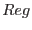

One can then define (via evselect
called with withzcolumn=Y
withzerrorcolumn=N)
a `corrected' spectrum within region 
(usually in sky coordinates)
and its associated error :
| (3) | |||
| (4) |
In terms of the usual `uncorrected' spectrum:
The corresponding source spectrum  is also obtained by summing
over the region, and the model spectrum (to be compared to the data)
by multiplying with the central effective area
and applying the response matrix.
is also obtained by summing
over the region, and the model spectrum (to be compared to the data)
by multiplying with the central effective area
and applying the response matrix.
| (7) | |||
| (8) |
arfgen arfset=your_arf spectrumset=your_spectrum withbadpixcorr=N modelee=N \
withdetbounds=Y filterdss=N detmaptype=flat detxbins=1 detybins=1 \
withsourcepos=Y sourcecoords=tel sourcex=0 sourcey=0
Model fitting may be performed via XSPEC, entering as RATE,
and as STAT_ERR, with  and in the Ancillary Response File and
Redistribution Matrix File, respectively.
and in the Ancillary Response File and
Redistribution Matrix File, respectively.
Note that the weighting procedure is incompatible with using the Poisson
model (C-statistic) in XSPEC (the  formula must be used).
This means that care must be taken to have enough counts per spectral bin.
formula must be used).
This means that care must be taken to have enough counts per spectral bin.